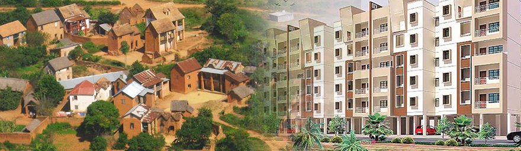
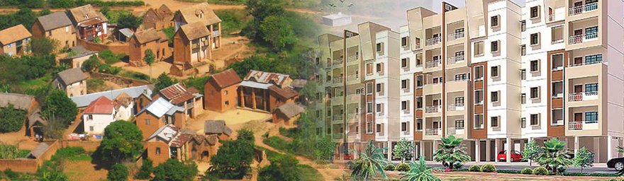

‹
›
Department of Survey and Settlement
Government of Tamil Nadu
‹
›
x
It is informed that, all the extract that are generated in this portal are having names in Unicode Tamil font. Users are requested not to use the Translate Option available in the Browser as it may do the wrong translation and the translated extract may not reflect the correct names..
The information under this e-service is dynamically updated. Therefore, physical visit to any office of revenue Department is not required to obtain the information. Application for Patta transfer can be filed at any Common Service Centres(CSCs) across the state. A fee of Rs 60/- per application is charged at CSCs. Copies of Field Measurement Sketch (FMS) can be downloaded at free of cost under this e-service
online Patta Transfer

View Patta/ Chitta /FMB- (Rural/Natham)
View A-Register Extract - (Rural/Natham)

Verify Patta/ Chitta- (Rural/Natham)
Verify Government /Private (Poramboke) Land
FMB Sketch - (Rural/Natham)
View Patta Order Copy
TSLR Extract

TSLR Sketch -Urban
Application Status
F-Line Skech / Statement